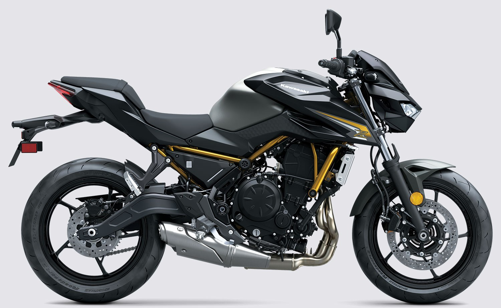

moto dealership
Transform the streets into your playground with the new Z650 S ABS supernaked motorcycle. Wide, muscular-looking yet reassuringly rider-friendly, this machine attracts universal attention thanks to its unique Sugomi™ style and Z performance characteristics. Advanced Kawasaki rider-centric technology abounds. For those who refuse to compromise, the Z650 S ABS delivers a perfect balance between sporty performance and all-day ride comfort.

2025 Z650 MSRP NON-ABS: $7,249 / MSRP ABS: $7,749 $200 SAVINGS ADDITIONAL VEHICLE FEATURES: Sugomi™-inspired Z styling Bright LED headlight & taillight 4.3-in TFT Color Instrumentation Smartphone connectivity via RIDEOLOGY THE APP MOTORCYCLE† Dunlop Sportmax RoadSport 2 tires

New Kawasaki Corner Management Function (KCMF) New Kawasaki TRaction Control (KTRC) New Kawasaki Intelligent anti-lock Brake System (KIBS) New Power Mode selection New Integrated Riding Modes New Electronic Cruise Control Updated riding position for improved rigidity and response New Dunlop Sportmax Q5A tires Brembo front brake package with steel-braided lines Gold-colored fork outer tubes Öhlins S46 rear shock with remote preload adjuster Handlebar-mounted USB-C outlet